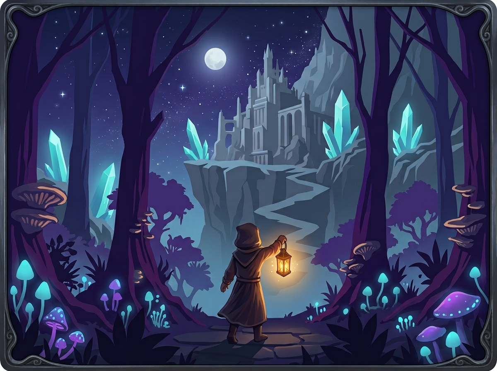
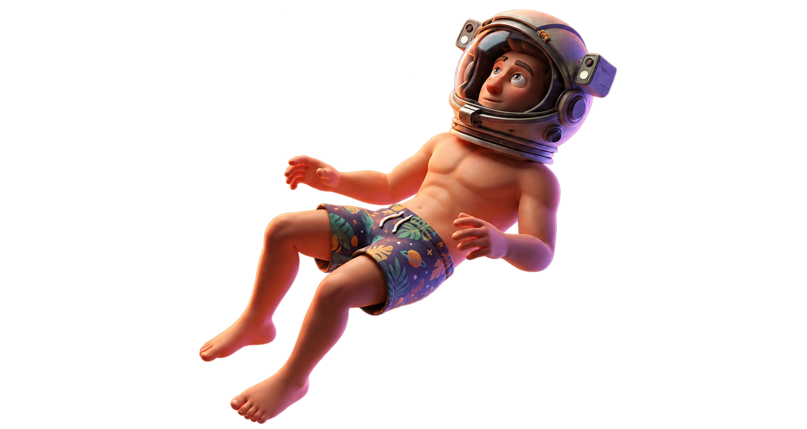
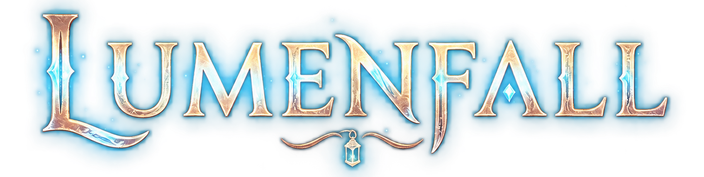
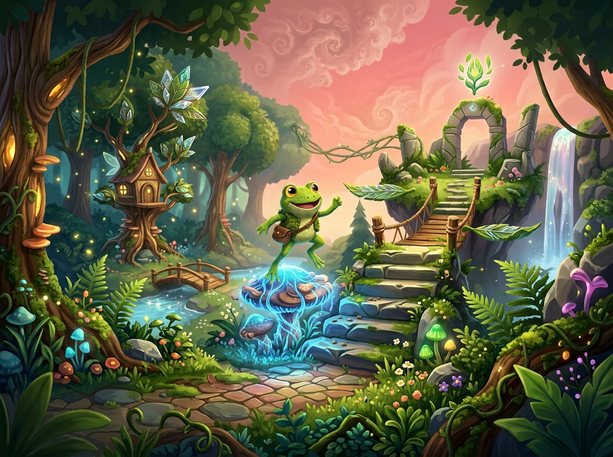
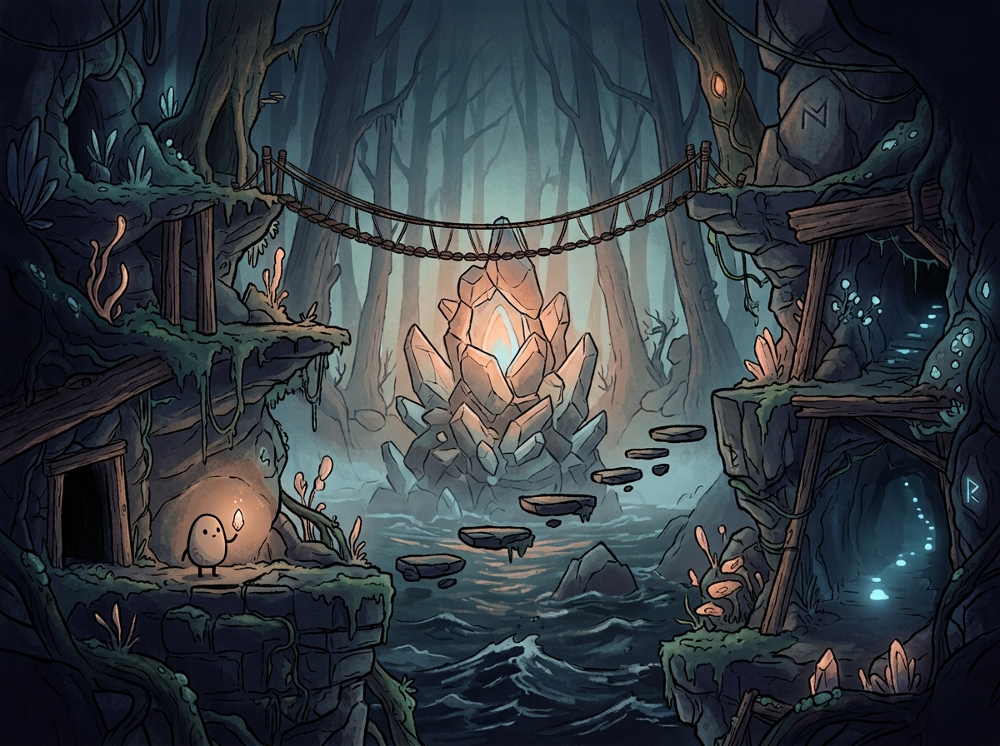

Lumenfall
3D - Em desenvolvimentoExplore um mundo esquecido onde a luz está desaparecendo lentamente. Guie um pequeno viajante em busca por um caminho de volta para casa.
Na Little Comet Studio temos um conduta muito importante:
Mesmo o menor jogo pode se tornar uma grande experiência quando feito com dedicação e carinho,
por isso nos importamos com o nossos jogadores, eles são a força que nos move nesse grande
espaço dos jogos.

A Little Comet Studio é uma desenvolvedora independente focada em pequenas criações mas que
marcam.
Trabalhamos lado a lado com a criatividade e a personalidade única da nossa identidade.
Acreditamos em jogos que não precisam ser enorme para proporcionar uma experiência memorável.

Explore um mundo esquecido onde a luz está desaparecendo lentamente. Guie um pequeno viajante por ambientes coloridos, ruínas misteriosas e encontros inesperados em uma jornada de descoberta, curiosidade e busca por um caminho de volta para casa.
Conheça alguns dos nossos principais jogos.

Explore um mundo esquecido onde a luz está desaparecendo lentamente. Guie um pequeno viajante em busca por um caminho de volta para casa.

Ajude um sapo curioso a recuperar sua floresta resolvendo enigmas, descobrindo caminhos secretos e causando a quantidade certa de confusão.

Explore um mundo misterioso onde a luz está desaparecendo. Pule, explore e descubra os segredos escondidos além do caminho.
Explore nossos jogos e descubra os mundos que estamos criando.
Explorar os jogosCriamos jogos independentes de pequena e média escala, explorando diferentes gêneros e estilos.
Nossos jogos estão disponíveis em diferentes plataformas, dependendo de cada projeto.
Sim! Lumenfall é um dos nossos projetos atualmente em desenvolvimento.